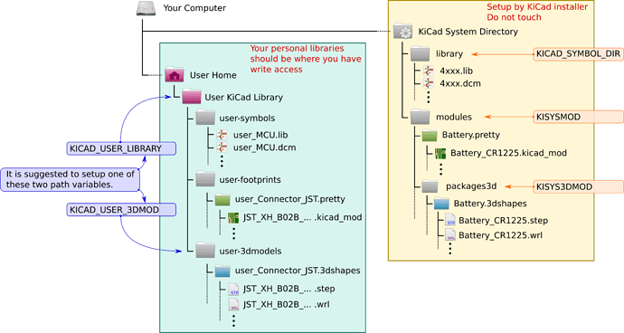
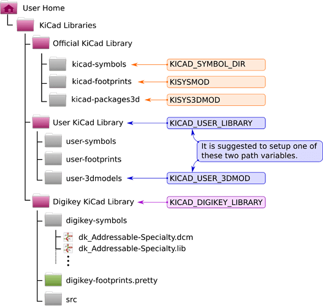

Setting Up KiCad 5 Libraries
23 Feb 2020
OMG Kicad is such a pain in the ass for setting up libraries to the point of you want to yell at the developers … but it is free, so I shouldn’t complain. But there is little excuse for poor documentation and no real end user thought.
You can see the libraries at kicad.github.io.
Standard Layout

Github Layout

From kicad main window -> preferences -> configure paths
- KICAD_SYBMOL_DIR: symbols for schematic (
.lib,.dcm) - KISYSMOD: foorprint libraries (
.pretty) - KISYS3DMOD: 3D files of each part for rendering (
.step,.wrl) - KICAD_USER_LIBRARY: your own schematic symbols
- KICAD_USER_3DMOD: your own 3d rendered parts
Note: Make sure to copy the fp-lib-table from kicad-footprints to your project folder, otherwise you won’t have footprints (so what do the preferences do?)
References
- Good reference from kicad forum